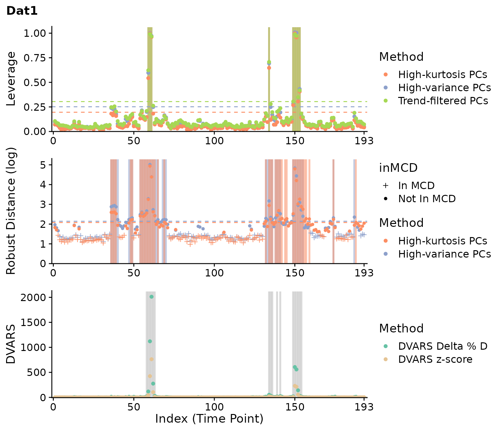

clever
vignettes/vignette.Rmd
vignette.Rmdclever implements the PCA leverage outlier detection method for high-dimensional (HD) data, as detailed in this manuscript:
citation("clever")[1]##
## Mejia AF, Nebel MB, Eloyan A, Caffo B, Lindquist MA (2017). "PCA
## leverage: outlier detection for high-dimensional functional magnetic
## resonance imaging data." _Biostatistics_, *18*(3), 521-536. doi:
## 10.1093/biostatistics/kxw050 (URL:
## https://doi.org/10.1093/biostatistics/kxw050).
##
## A BibTeX entry for LaTeX users is
##
## @Article{mejiaPCALeverageOutlier2017a,
## title = {PCA leverage: outlier detection for high-dimensional functional magnetic resonance imaging data},
## author = {Amanda F Mejia and Mary Beth Nebel and Ani Eloyan and Brian Caffo and Martin A. Lindquist},
## journal = {Biostatistics},
## year = {2017},
## volume = {18},
## number = {3},
## pages = {521--536},
## publisher = {Oxford University Press},
## doi = {10.1093/biostatistics/kxw050},
## }In summary, the manuscript proposes a measure of “outlyingness” for HD data observations by drawing on the traditional statistical ideas of PCA, leverage, and outlier detection. While its primary application is detecting outlying timepoints in an fMRI scan, the method can also be applied to other forms of HD data such as gene expression data.
In addition to PCA leverage, we have also implemented two other measures of outlyingness: robust distance, described in the same manuscript as PCA leverage, and DVARS, as formulated by this manuscript:
citation("clever")[2]##
## Afyouni S, Nichols TE (2018). "Insight and inference for DVARS."
## _Neuroimage_, *172*, 291-312. doi: 10.1016/j.neuroimage.2017.12.098
## (URL: https://doi.org/10.1016/j.neuroimage.2017.12.098), This citation
## is for the DVARS measure of outlyingness.
##
## A BibTeX entry for LaTeX users is
##
## @Article{afyouniInsightInferenceDVARS2018a,
## note = {This citation is for the DVARS measure of outlyingness.},
## title = {Insight and inference for DVARS},
## author = {Soroosh Afyouni and Thomas E Nichols},
## journal = {Neuroimage},
## year = {2018},
## volume = {172},
## pages = {291--312},
## publisher = {Elsevier},
## doi = {10.1016/j.neuroimage.2017.12.098},
## }As input, clever takes a \(T\) x \(V\) matrix, \(Y\). In our case, \(Y\) represents an fMRI run: each row is a vectorized volume, and each column represents one timepoint. Next, the algorithm performs the following steps:
Normalize \(Y\) by centering and scaling its columns robustly.
Perform PCA on the normalized \(Y\) matrix using the singular value decomposition (SVD) in order to obtain the \(T \times T\) PC score matrix, \(U\).
Some PCs are removed from \(U\) to obtain the \(Q \times T\) (\(Q < T\)) matrix, \(U'\). The PCs which are retained are those likley to contain outlier information: PCs with greater-than-average variance, or PCs with both high variance and high kurtosis. (The removal of at least one PC is also a theoretical requirement for leverage; additionally, the robust distance method requires \(Q\) to be appropriately small relative to \(T\).)
Next, leverage and/or robust distance is measured. The output of each is a length \(T\) vector representing the “outlyingness” of each time point.
The outlyingness measures are thresholded to obtain the set of identified outliers.
We also include the DVARS outlier detection method in clever. It normalizes the data as explained in step 1 (and not as described in the paper cited above), but otherwise follows the algorithm as described in the paper and implemented in the MATLAB code provided by the authors.
clever includes data from the Autism and Brain Imaging Data Exchange (ABIDE), a publicly available resource of neuroimaging and phenotypic information (Di Martino and others, 2014). Our simulated datasets are based on resting-state fMRI scans from two ABIDE subjects: the first contains artifacts likely due to a couple periods of high subject head motion; the second is relatively artifact-free. Axial slices are used instead of the entire volumes to minimize the download time of clever.
Here we will run through a simple example. First let’s pull the data:
The data for both subjects consist of a single slice from an fMRI volume. A brain mask has been applied to vectorize the data, forming a \(T \times V\) (time by voxel) matrix.
dim(Dat1)## [1] 193 4675
dim(Dat2)## [1] 145 4679We next run clever on both datasets. First, we will begin by looking at the standard implementation of PCA leverage:
clever.Dat1.var.lev = clever(Dat1, verbose=TRUE, DVARS=FALSE, lev_images=FALSE)## Centering and scaling the data matrix.## Warning in clever(Dat1, verbose = TRUE, DVARS = FALSE, lev_images = FALSE): Warning: 283 constant voxels (out of 4675). These will be removed for estimation of the covariance.## Computing the PC scores.
## Identifying the PCs with high kurtosis.
## Method PCA_kurt__leverage: Outliers detected.
## Done!
clever.Dat2.var.lev = clever(Dat2, verbose=TRUE, DVARS=FALSE, lev_images=FALSE)## Centering and scaling the data matrix.## Warning in clever(Dat2, verbose = TRUE, DVARS = FALSE, lev_images = FALSE): Warning: 68 constant voxels (out of 4679). These will be removed for estimation of the covariance.## Computing the PC scores.
## Identifying the PCs with high kurtosis.
## Method PCA_kurt__leverage: Outliers detected.
## Done!
plot(clever.Dat1.var.lev, plot_title="Dat1", show.legend=FALSE)
plot(clever.Dat2.var.lev, plot_title="Dat2", show.legend=FALSE)PCA leverage indicates clear outliers in the first dataset around the 60th and 150th timepoints. While the second dataset is mostly artifact-free, PCA leverage does indicate a few potential outliers around the 40th and 110th timepoints.
Next, we can run all methods included in clever and compare the results:
clever.Dat1 = clever(Dat1, projection="all", out_meas="all",
lev_images=TRUE, verbose=TRUE)## Centering and scaling the data matrix.## Warning in clever(Dat1, projection = "all", out_meas = "all", lev_images = TRUE, : Warning: 283 constant voxels (out of 4675). These will be removed for estimation of the covariance.## Computing DVARS.
## Computing the normal and trend-filtered PC scores and directions.
## Identifying the PCs with high varaince.
## Identifying the PCs with high kurtosis.
## Identifying the trend-filtered PCs with high varaince.
## Method PCA_var__leverage: Outliers detected. Computing leverage images.
## Method PCA_kurt__leverage: Outliers detected. Computing leverage images.
## Method PCA_var__robdist: Outliers detected. Computing leverage images.
## Method PCA_kurt__robdist: Outliers detected. Computing leverage images.
## Method PCATF__leverage: Outliers detected. Computing leverage images.
## Done!
clever.Dat2 = clever(Dat2, projection="all", out_meas="all",
lev_images=TRUE, verbose=TRUE)## Centering and scaling the data matrix.## Warning in clever(Dat2, projection = "all", out_meas = "all", lev_images = TRUE, : Warning: 68 constant voxels (out of 4679). These will be removed for estimation of the covariance.## Computing DVARS.
## Computing the normal and trend-filtered PC scores and directions.
## Identifying the PCs with high varaince.
## Identifying the PCs with high kurtosis.
## Identifying the trend-filtered PCs with high varaince.
## Method PCA_var__leverage: Outliers detected. Computing leverage images.
## Method PCA_kurt__leverage: Outliers detected. Computing leverage images.
## Method PCA_var__robdist: Outliers detected. Computing leverage images.
## Method PCA_kurt__robdist: Outliers detected. Computing leverage images.
## Method PCATF__leverage: No outliers detected. Skipping leverage images.
## Done!Here are the outliers for the first dataset:
plot(clever.Dat1, "all", plot_title="Dat1")
And for the second:
plot(clever.Dat2, "all", plot_title="Dat2")For the first dataset, most methods identify outliers around timepoints 60 and 150 consistently. A few other timepoints are flagged as well for scrubbing and DVARS, and robust distance flags many more timepoints. For the second dataset, weaker outliers are identified around timepoint 40 and 110 inconsistently. Overall, these results are consistent with our prior knowledge of both datasets.
To validate our results, we can reconstruct the original fMRI images using the mask which was applied to vectorize the data. See clever::Matrix_to_VolumeTimeSeries for a helper function to do this.
## oro.nifti 0.10.3
library(neurobase)
#' Selects a timepoint from a volume time series, and returns it after adding
#' the NIfTI header from the mask onto it.
#' @param VolumeTimeSeries A 4D matrix. Time is on the 4th dimension.
#' @param time The timepoint to select.
#' @param mask The corresponding mask.
#'
#' @return The 3D volume with the NIfTI header from the mask.
Volume_to_NIfTI <- function(VolumeTimeSeries, time, mask){
vol <- VolumeTimeSeries[,,,time]
vol <- copyNIfTIHeader(img=mask, arr=vol)
return(vol)
}
fname = system.file("extdata", "Dat1_mask.nii.gz", package = "clever")
Mask1 = readNIfTI(fname) #Pitt_0050048 (full of artifacts)
Img1 = Matrix_to_VolumeTimeSeries(Dat1, Mask1)
fname = system.file("extdata", "Dat2_mask.nii.gz", package = "clever")
Mask2 = readNIfTI(fname)
Img2 = Matrix_to_VolumeTimeSeries(Dat2, Mask2)Below, we compare the timepoint of median leverage (first) to the timepoint of maximum leverage (second) in the first dataset. We choose to use the kurtosis PC-selection method and leverage outlyingness measurement.
par(mfrow=c(1,2))
levs = clever.Dat1$outlier_measures$PCA_var__leverage
t_med = order(levs)[ceiling(length(levs)/2)]
t_max = which.max(levs)
image(Img1[,,,t_med], main=paste0('Median leverage (T = ', t_med, ')'))
image(Img1[,,,t_max], main=paste0('Maximum leverage (T = ', t_max, ')'))The median time point appears normal, whereas the most outlying time point clearly has banding artifacts likely due to subject motion.
clever can also display the “leverage images” for each outlying observation. There are two types: the composite of the selected PC directions, weighed by the scores for that observation (without scaling by variance), and the single PC direction with the highest score at that observation. To solve for these images, be sure to use lev_images=TRUE (already the default option).
Lev_Img1 = clever.Dat1$outlier_lev_imgs$PCA_var__leverage
cat('The timepoints meeting the first outlier level threshold:\n')## The timepoints meeting the first outlier level threshold:## 59, 60, 61, 134, 149, 150, 151, 152, 153Here are the leverage images at timepoint 150 for the first dataset:
par(mfrow=c(1,2))
# Constant voxels are deleted during the `clever` algorithm, so the leverage images will have
# missing values where the constant voxels were. The NA_fill option is used here to make
# these voxels have the same color as the background (out-of-mask voxels).
Lev_Img1.mean = Matrix_to_VolumeTimeSeries(Lev_Img1$mean, Mask1)
Lev_Img1.top = Matrix_to_VolumeTimeSeries(Lev_Img1$top, Mask1)
idx = which(as.numeric(row.names(Lev_Img1$mean)) == t_max)
image(Lev_Img1.mean[,,,idx], main=paste0('Lev. img., mean dir. (T=',t_max,')'))
image(Lev_Img1.top[,,,idx], main=paste0('Lev. img., top dir. (T=',t_max,')'))The leverage images highlight the banding artifact present at this time point.